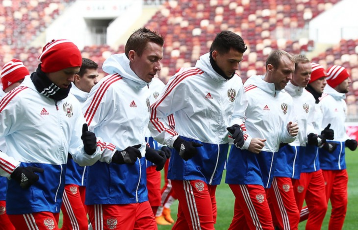

Болельщики проголосуют за девиз сборной на ЧМ-2018
На официальном сайте ФИФА появилось голосование, в котором решится, какой девиз будет у сборной России на ЧМ-2018.
26 апреля на официальном сайте ФИФА опубликовано открытое голосование за слоган сборной России на Чемпионате мира по футболу 2018 года. Этот девиз будет украшать автобус нашей нашей национальной команды на турнире.
Ранее болельщики присылали свои варианты на рассмотрение, теперь всем желающим предлагается выбрать один из трех лучших слоганов.
«Пришло время проголосовать за лучшие варианты девизов, которые появятся на автобусах 32 команд-участниц Чемпионата мира FIFA 2018 в России», - говорится на сайте ФИФА.
Для голосования доступны слоганы, предложенные всем 32-м участникам Чемпионата мира по футболу, который летом 2018 года пройдет в России. Каждый девиз написан на родном языке и продублирован на английском.
Варианты, которые предложены россиянам:
1. Всем сердцем и всей страной следуем за мечтой (Together and with our whole hearts we are following the dream);
2. Играй с открытым сердцем (Play with an open heart);
3. Русские медведи движутся к победе (Russian bears are on their way to victory).
Отдать свой голос за один из вариантов можно как на сайте ФИФА, так и на специальных страничках сборных-участниц ЧМ-2018 в соцсетях. Голосование продлится до 14 мая, а его результаты будут объявлены 24 мая.
Автобусы на футбольных соревнованиях используются для транспортировки команды непосредственно на стадион, где проводятся игры. Большинство современных арен оснащены специальными ангарами — таким образом, спортсмены и тренерский штаб попадают и покидают спортивное сооружение, минуя болельщиков.
.png)